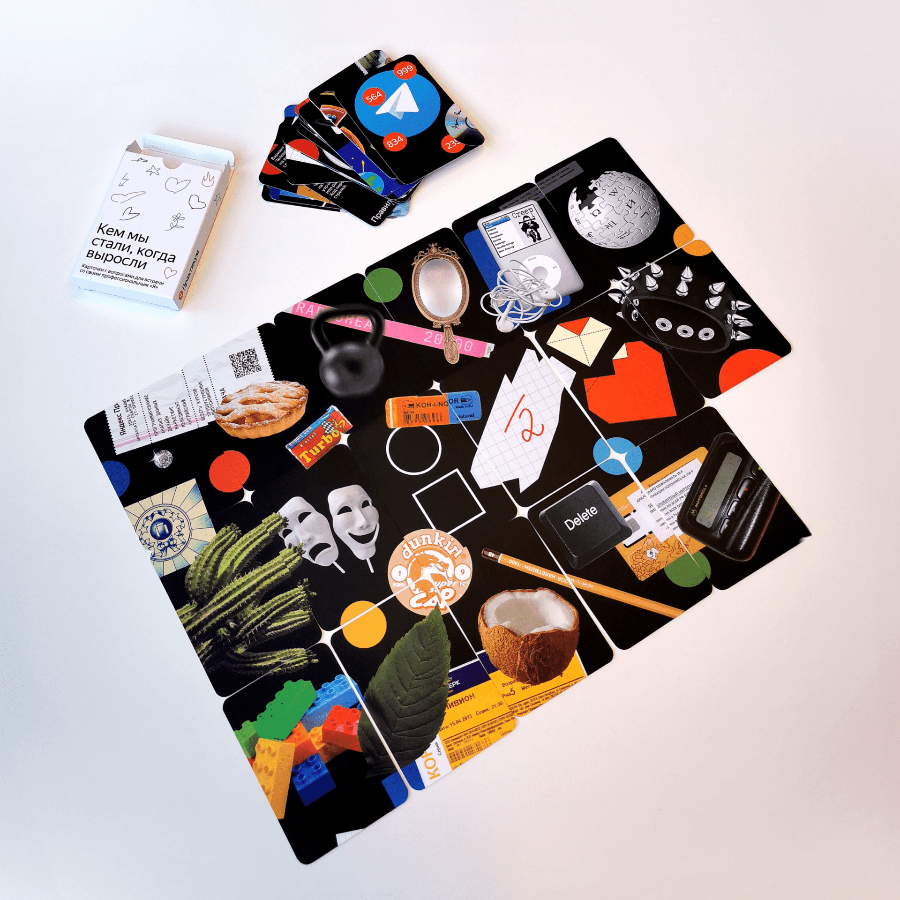

Спецпроекты / айдентика / рекламные концепции / дизайн-системы /
арт-дирекшен

2022–2024
Both typography and design system of the previous year were updated.
Each of the four different events kept their hero color, which
combined with the type layer melt to a colored liquid metal,
celebrating the anniversary.
Similar to the previous year the design process started in motion
and ended in static. With motion at the core, all applications
across digital touch points were animated and transferred to static
for printed matter.